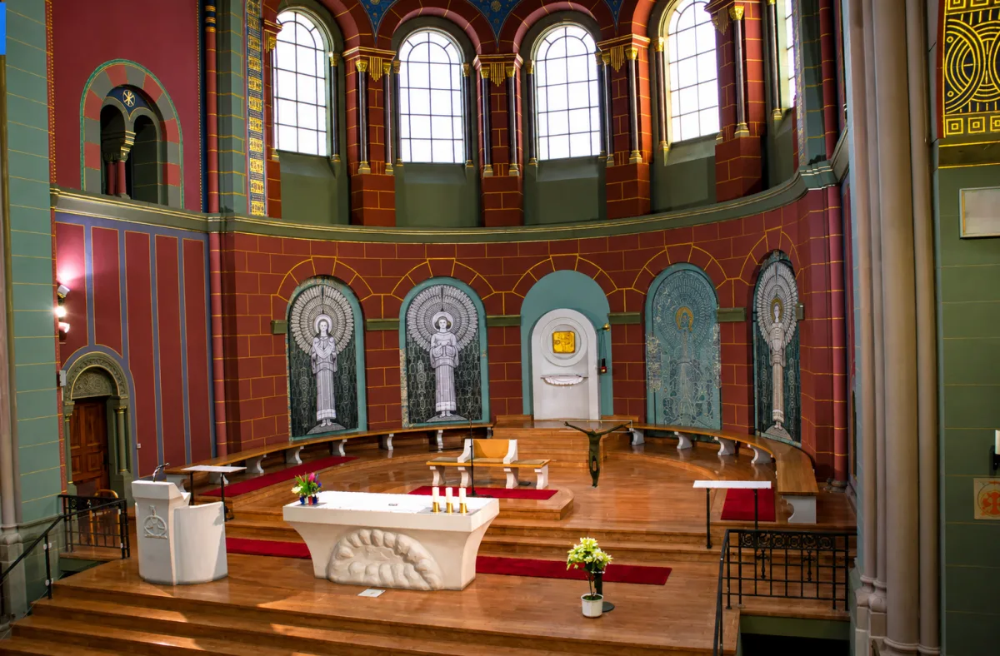
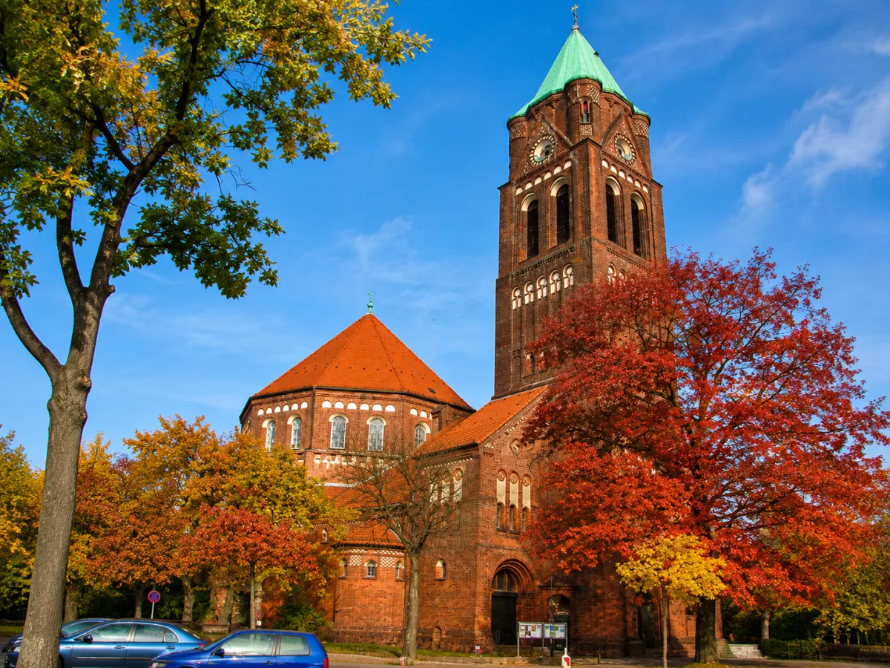
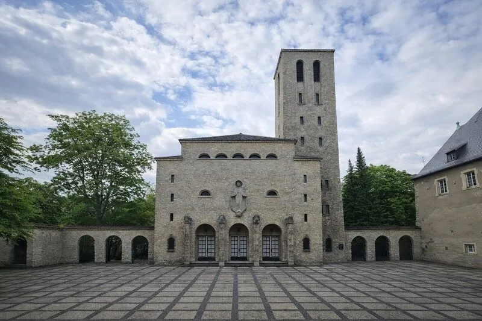

+
Od 1945 roku w Berlinie
Polska Misja Katolicka
Johannes-Basilika w sercu Kreuzbergu
Błogosławieni, którzy wprowadzają pokój, albowiem oni będą nazwani synami Bożymi.
Mt 5,9Johannes-Basilika w sercu Kreuzbergu
Błogosławieni, którzy wprowadzają pokój, albowiem oni będą nazwani synami Bożymi.
Mt 5,9Ważne daty i uroczystości w naszej parafii
Johannes-Basilika
Lilienthalstr. 5, 10965 Berlin-Kreuzberg
Towarzyszymy wiernym na każdym etapie duchowej drogi
Zgłoś dziecko do chrztu
Napisz do nasZapisz dziecko na przygotowanie
Zapisz onlineZapisz się na przygotowanie
Zapisz onlineUmów spotkanie w sprawie ślubu
Napisz do nasSprawdź godziny spowiedzi
Więcej informacjiWezwij księdza do chorego
Napisz do nas


Polska Misja Katolicka w Berlinie istnieje od 1945 roku i jest duchowym domem dla polskojęzycznych katolików w stolicy Niemiec.
Nasza wspólnota gromadzi się w zabytkowej Johannes-Basilice w sercu Kreuzbergu. Pielęgnujemy polską tradycję, kulturę i wiarę - otwierając nasze drzwi dla wszystkich, którzy szukają wspólnoty modlitwy w języku polskim.
Zapraszamy do uczestnictwa w naszych nabożeństwach, sakramentach i życiu parafialnym. Jesteśmy wspólnotą otwartą, gotową służyć każdemu, kto szuka Boga.
Proboszcz Polskiej Misji Katolickiej w Berlinie
Serdecznie zaprasza wszystkich Polaków i osoby niemieckojęzyczne do uczestnictwa w naszych nabożeństwach i życiu parafialnym.
Wikariusz
Wikariusz
Wikariusz
Dołącz do jednej z naszych wspólnot

Formacja i pogłębianie wiary przez studium Pisma Świętego

Wspólnota małżeństw budujących Kościół w swoich domach

Wzbogacanie liturgii współczesnymi śpiewami religijnymi

Formacja chrześcijańska prowadząca do dojrzałej wiary

Oddanie się Matce Bożej i apostolstwo w codzienności

Modlitwa różańcowa łącząca wiernych na całym świecie

Wspólnota młodych oddanych Matce Bożej

Wspólnota modlitwy i wsparcia dla mediów katolickich

Modlitwa o łaskę dobrego przejścia do wieczności

Braterstwo mężczyzn wspierających się w wierze i życiu

Siostrzana wspólnota kobiet dzielących się wiarą i życiem